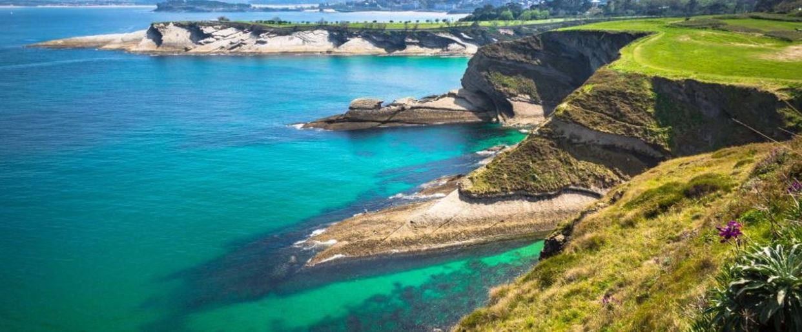

CANTABRIA
Es una comunidad eminentemente costera y montañosa.
La costa cántabra se extiende por todo el litoral de la región homónima y está
dividida por la Costa Vasca al este y la Costa Verde, al oeste.

El Mar Cantábrico
Estos son los municipios bañado por el mar de Cantábrico:
- San Vicente de la Barquera
- Laredo
- Santoña
- Comillas
- Noja
- Liencres
- Santillana del Mar
- Castro Urdiales
- Miengo